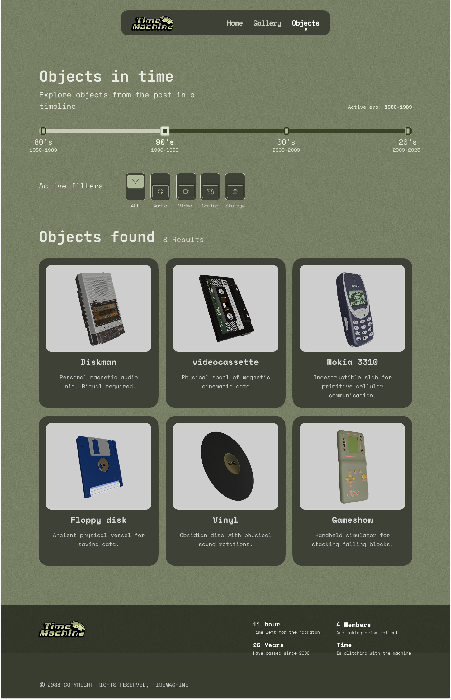

Direction du projet
Le projet Time Machine organise la navigation autour d'une ligne du temps, de filtres thématiques et de cartes objets pour rendre l'exploration rapide et immersive.
UX / UI
Interface timeline orientée exploration d'objets vintage, avec une direction visuelle inspirée des années 80/90.
Le projet Time Machine organise la navigation autour d'une ligne du temps, de filtres thématiques et de cartes objets pour rendre l'exploration rapide et immersive.
